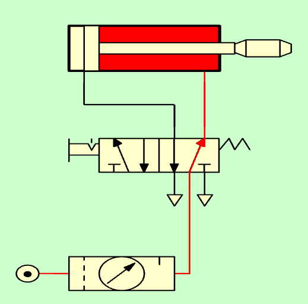
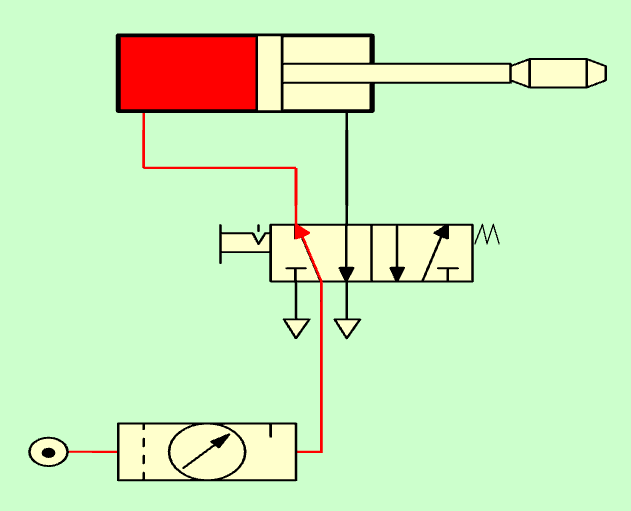
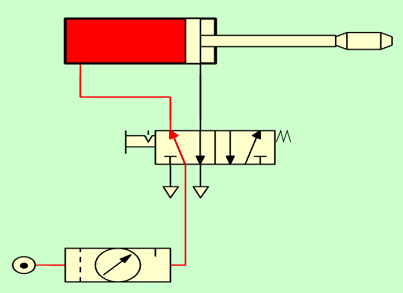

4. Cilindro de doble efecto¶
Un cilindro de doble efecto es un cilindro que tiene dos vías de entrada y salida de aire. El vástago puede salir con fuerza cuando se inyecta aire en la parte trasera y puede entrar con fuerza cuando se inyecta aire en la parte delantera.
La fuerza de salida del vástago siempre es un poco mayor que la fuerza de entrada porque el aire comprimido no puede hacer presión sobre la zona que ocupa el vástago.
Los cilindros de doble efecto se comandan mediante una válvula 4/2 o mediante una válvula 5/2. Ambas válvulas son semejantes y solo se diferencian en el número de escapes que poseen (un escape la válvula 4/2 y dos escapes la válvula 5/2).
A continuación se muestra el esquema en reposo del cilindro de doble efecto:
{kind=link}
Cuando accionamos la válvula 5/2, el aire que proviene de la unidad de mantenimiento pasa hacia la vía superior izquierda de la válvula y entra en la parte posterior del cilindro. Como consecuencia, el cilindro se llena de aire en la parte trasera mientras el aire de la parte delantera se escapa a la atmósfera. El resultado es que el vástago del cilindro sale hacia fuera empujando la carga que se encuentre delante.
{kind=link}
Una vez que el vástago ha salido hasta el tope, nos encontramos con el siguiente esquema:
{kind=link}
Ejercicios¶
Explica las características principales de un cilindro de doble efecto.
Dibuja un esquema de un cilindro de doble efecto en reposo, con el vástago dentro, comandado por una válvula 5/2.
Dibuja un esquema de un cilindro de doble efecto accionado, con el vástago fuera, comandado por una válvula 5/2.
Simula el funcionamiento de un cilindro de simple doble efecto comandado por una válvula 5/2.
¿Qué ocurrirá si quitamos los escapes de la válvula 5/2? Simula el funcionamiento. Explica cómo cambia el funcionamiento al retirar el escape y explica porqué se comporta de esa manera.
Utiliza dos válvulas 3/2 para hacer funcionar un cilindro de doble efecto en el simulador.
Explica el funcionamiento del circuito:
¿Qué puede pasar en el circuito anterior si accionamos las dos válvulas a la vez?
¿Qué puede pasar en el circuito anterior si no accionamos ninguna válvula 3/2?
{kind=link}